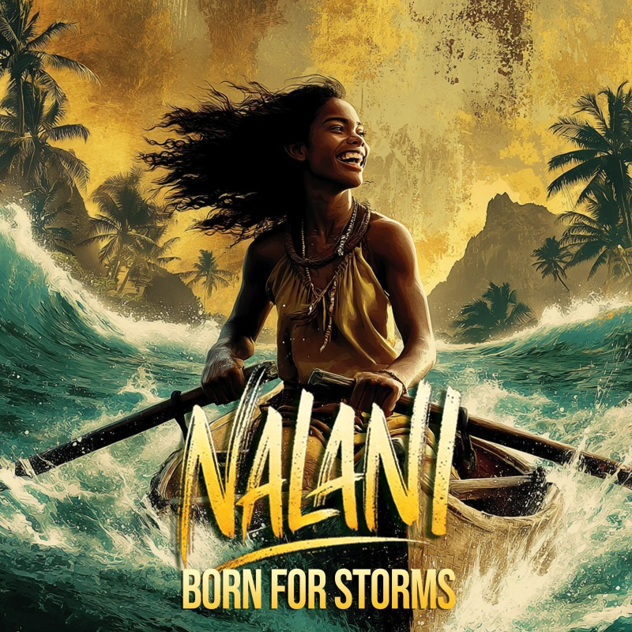

WORLDMATAALA
VOICENALANI
MOVEMENTCalm Before The War
Born For Storms
Calm Before The War · A cinematic music video and short film from a 19th-century Polynesian historical fiction
The Scene
Called wild, called wrong, dragged north where no one smiled. Nalani bends without breaking, passing their tests with different eyes, a storm that waits then burns the sky.
Lyrics
They said I couldn't sit so I ran
Out past the reef where no girl swam
They called me wild called me wrong
But I could row all night and still be strong
The nuns said "broken" the priests said "shame"
My name too loud my thoughts untamed
But I learned to bend without the break
To play their rules but not their fate
They taught me shame I answered back
With eyes that cut through every mask
I failed I fell I stood again
Not by grace but grit and flame
I'm not the stillness I'm the tide
A storm that waits then burns the sky
Born too loud too sharp too much
But made for war for truth for trust
They'll never name what I became
A girl too fast to fit their frame
But every flaw they tried to hide
Is now the reason I survive
They dragged me north where no one smiled
Where books were rules and hearts on trial
I held my tongue I bit my pride
But still my thoughts refused to hide
I passed their tests with different eyes
Not built for scores but seeing lies
I learned their laws I learned their ways
And still I dreamed of ocean days
My mind's a storm but I've made it lean
Sharp as a blade fast and unseen
Sharp as a blade fast and unseen
I slip through doors they tried to close
And walk through fire no one chose
I'm not the silence I'm the spark
That finds its way through halls gone dark
Too quick to tame too strange to fall
But made to break a higher wall
They wrote me off then watched me rise
A storm that learns a girl who tries
And though I walk in stranger's lands
I shape the world with calloused hands
You say I scatter
But only when the world stands still
You say I stray
But I find truth outside your will
You say I'm wild
But wild is how the island breathes
I falter in the quiet days
But sharpen when the fire sways
I drift in lines you call control
But lock in when the cannons roll
You thought I'd fold but I unfold
When storms arrive I don't let go
I move where silence dares not stay
And hold my ground when light gives way
And every edge you tried to dull
Became the blade that took your hull
I'm not the peace you understand
I'm wind and fire wrapped in sand
Too fierce to hold too soft to kill
A war made quiet a mind made still
The calm I find in burning skies
That's where my strength and sorrow lie
And when the storm comes for my kin
You'll see what lives beneath this skin
I was made for more than rules and fear
And the world I need is drawing near
Let them try to name my storm
But they've never seen it calm… before the war